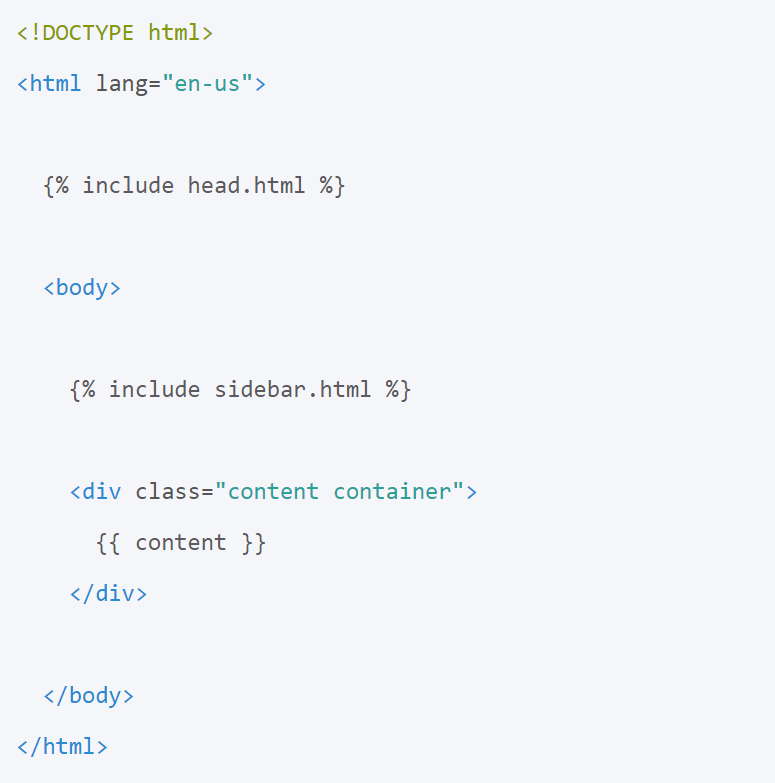
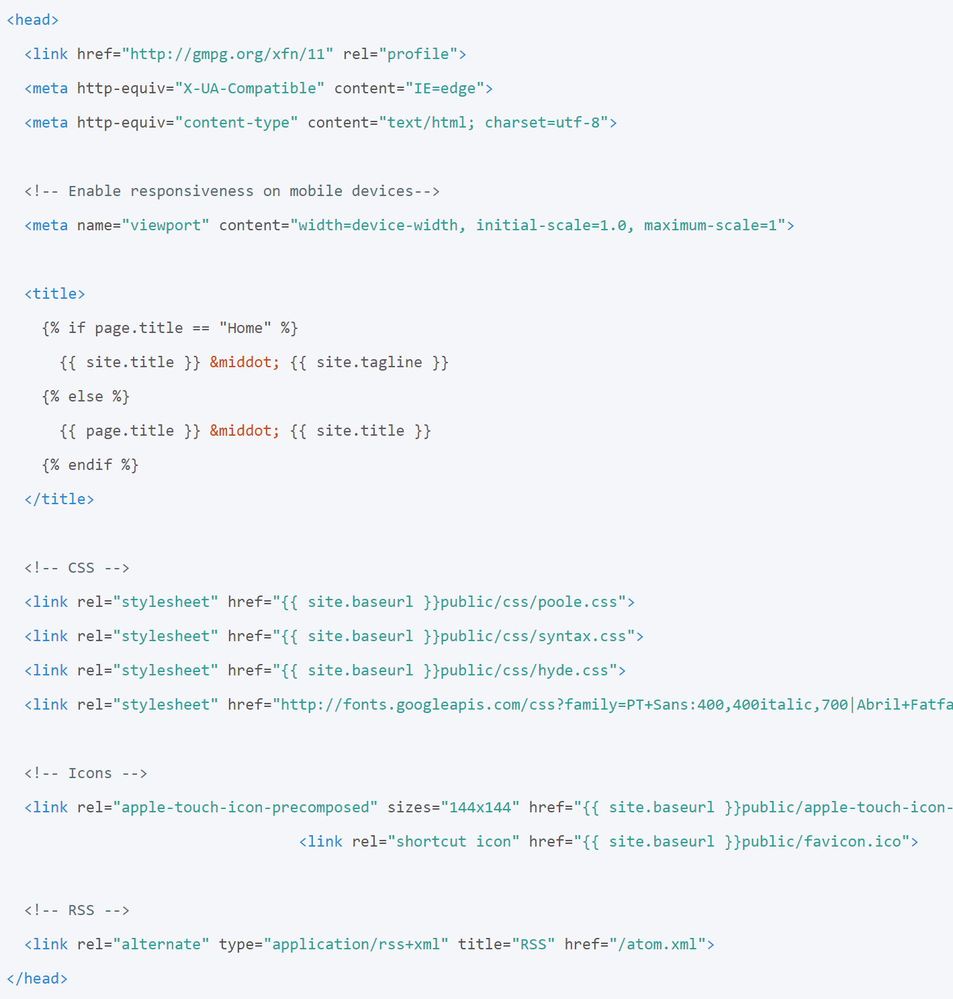

Jekyll Intermediate Workshop
Build and customize a website with Jekyll
Hello everyone, Welcome to this workshop which aims to support you to get familiar with coding environments and
setup your personal environment for development of codes. This workshop is built for people who are fairly familiar with coding
but would like to improve their knowledge about the tools and processes that improves their productivity.
My name is Shayan Fahimi. I am a PhD student in engineering and ...
Land Acknowledgement
UBC Vancouver is located on the traditional, ancestral, and unceded territory of the xʷməθkʷəy̓əm (Musqueam), səl̓ilwətaɁɬ təməxʷ (Tsleil-Waututh), Stz’uminus, S’ólh Téméxw (Stó:lō), Skwxwú7mesh-ulh Temíx̱w (Squamish), and Coast Salish peoples.
Please take a moment to explore native-land.ca
But before going into more details I would like to begin by acknowledging that I am fortunate to present this workshop in Burnaby which is the unceded territory of the Coast Salish People.
Please take a moment to explore this website and learn more about the land you are located now.
Outline
Introduction
Installation
Building your Website
Site Structure
Blogging
Jekyll Plugins
Serving
This workshop is about building websites and we start by asking about your reasons for attending this workshop.
Then, we talk about Jekyll and review the installation process.
After installing Jekyll on your local machine, you have a few choices to build your first website.
We go over these choices and use one of them to build a website and explain the directory structure
in Jekyll. We talk about themes, Liquid language, layouts and includes and briefly introduce CSS.
Then, we talk about blogging in Jekyll and plugins that extend Jekyll built-in capabilities.
Finally, we learn about serving the website online using Github or other web hosting services.
Why do you need an academic website?
You can use Jekyll to build an academic website and showcase your projects, resume, or your hobbies
or build a personal website or a website that supports your projects and provide documentation or
examples. Please use the chat box to write your goal for attending this workshop.
What is Jekyll?
Static website generator based on Ruby
Developed by Tom Preston-Werner
Fully integrated with Github
Jekyll is a popular website generator based on Ruby, which is designed to build static websites. Jekyll is developed by Tom Preston-Werner. Jekyll is fully integrated with Github and can be hosted for free on Github Pages.
Jekyll takes a template directory and runs it through two converters, Textile and Liquid. The result is a complete static website, a bunch of HTML and CSS files, ready to be served.
Static vs Dynamic
Website generators are divided into two categories: Dynamic and Static. Static pages are pre-rendered, cached, and delivered to the user via a content delivery network (CDN). On the other hand, Dynamic pages are generated in real time when the user sends the request.
Static websites are easier for the web browser to load and are great choices for personal blogs, academic websites, or simple business websites. They eliminate the complexity of creating and working with databases and do not have any unnecessary overhead.
To use static website generators, you are generally expected to use code-editors to build your website. Also, knowing a bit of CSS and HTML can help you to customize a theme for your website.
Installation
Ruby compiler
Rubygems
For this workshop, please install Jekyll on your system following the installation guide
Verify the installation:
$ jekyll -v
To install Jekyll on your system, first, you need to install two other programs. Jekyll is written in Ruby, an interpreted, high-level, general-purpose programming language. Therefore, you need to install it to run Jekyll and maintain your Jekyll website. Another program is RubyGems, which is a package manager for the Ruby programming language.
Build
Jekyll Now
$ jekyll new [name of blog]
$ jekyll serve
Open localhost: http://127.0.0.1:4000
You can build a new boilerplate website with a default gem-based theme by navigating to somewhere you would like to create your first project and running
What is Bundler?
$ gem install bundler
$ bundle exec jekyll serve
Instead of creating a new website using jekyll new, you can also clone a starting point to your local machine and serve it there. We will learn more about that in Themes.
If you have a Gemfile in the directory of the theme you found, you need to use Bundler to install all the gems before serving the website. Jekyll bundler is a gem that ensures compatibility of all the plugins across different environments with Jekyll installed on your system. You need to install Bundler after installing Jekyll:
Jekyll monitors the project folder and rebuilds your website anytime you make a change. If you want to stop serving your website locally, use Ctrl + C.
Site Structure
The biggest difference between site generators is the tools and capabilities they offer to write, publish, and monitor your content in the desired style. Jekyll has a standard structure to find the content of your website and display them properly. The information here is from official Jekyll documentation](https://jekyllrb.com/docs/). A basic Jekyll website usually has the following directory structure:
Site Structure
.
├── _config.yml
├── _data
│ └── members.yml
├── _drafts
│ ├── begin-with-the-crazy-ideas.md
├── _includes
| ├── footer.html
| └── header.html
├── _layouts
| ├── default.html
| └── post.html
├── _posts
| ├── 2021-05-23-why-I-chose-UBC.md
| ├── 2021-01-12-welcome-to-jekyll.md
├── _sass
| ├── _base.scss
| └── _layout.scss
├── _site
├── 404.html
├── about.md
├── .jekyll-cache
│ └── Jekyll
│ └── Cache
│ └── [...]
├── .jekyll-metadata
├── Gemfile
├── Gemfile.lock
└── index.html
Themes
You can find Jekyll themes for various types of websites:
https://github.com/topics/jekyll-theme
https://jekyllthemes.io/free
https://jekyll-themes.com/free/
Check these website and find a theme.
Jekyll themes provide community-maintained templates and slides for users to build their websites. While the basic Minima theme is very robust, you can choose themes from many free resources, such as:
You can clone or fork the themes available on Github. For other themes, you need to download and unzip them on your local machine. Then, serve it using Jekyll. Remember that you need to install the gems used by third-party themes before serving them by running bundle exec jekyll serve the first time you serve them on your local machine.
If you are interested to use themes other than [Minima], Hyde is a simple, two-column, and uncomplicated theme. We will use this theme for the rest of this workshop to demonstrate different tools and capabilities of Jekyll.
Activity 1
Find a themes and install it on your local machine
Hyde
Download it here: https://github.com/poole/hyde
We will use this theme to learn about other features of Jekyll. The concepts work in other themes.
Liquid
Liquid Tags
Liquid Filters
Jekyll uses the Liquid templating language to process your site’s pages. Liquid follows simple templating rules and helps you to add logic or supplemental content to your simple HTML or Markdown pages. To use Liquid in HTML or Markdown pages, you need to add “Front matter” notation.
Liquid Tags
To output content into a page, two curly braces are used e.g.
{{ variable }} To perform logic statements or run a loop, curly braces are used with a percentage sign on each side e.g.
{% if statement %}
Liquid Filters
You can use filters to change strings or manipulate a list of items.
{{ "How many characters are in this string?" | size }}
Front Matter
guides Jekyll to parse your Markdown files and put content in the right place
Use YAML format wrapped between triple-dashed lines.
Open any of the files in _posts folder
---
layout: post
title: Blogging Like a Hacker
---
Now open page.html in the _layout folder:
---
layout: default
---
{{ page.title }}
{{ content }}
Front matter contains information about your webpage. Front matter must take the format of valid YAML or JSON wrapped between triple-dashed lines. When Jekyll finds this information in your files, it processes them differently. The front matter must be the first thing in your file.
Layouts
specify the general structure of a webpage.
Open default.html in _layouts directory:

When browsing a website, many sections stay the same across multiple pages. Layouts in Jekyll give you an easy solution to build an HTML file and use it across your website. You have seen one of them just in the previous section.
The file starts with tags that declare the type and language of the file. Here, we are not using Front matter since the file is not inheriting any other layout. The "head" tag is replaced with an include file. We learn more about them in the next section. In the "body" tag, the sidebar is created by another include file. The content will be replaced after interpreting the .md files.
Includes
snippets of code that we want to use over multiple pages
Google analytics tags, social media forms, headers and footers
Lets look at the content of head.html here:

Includes can be used in other web pages via Liquid tags:
{% include head.html %}
The content of this file replaces the head section of all HTML files in Hyde. In the title section, you can find a conditional statement that changes the value in title tag based on your location on the website.
More from the Research Commons at (UBC-V)